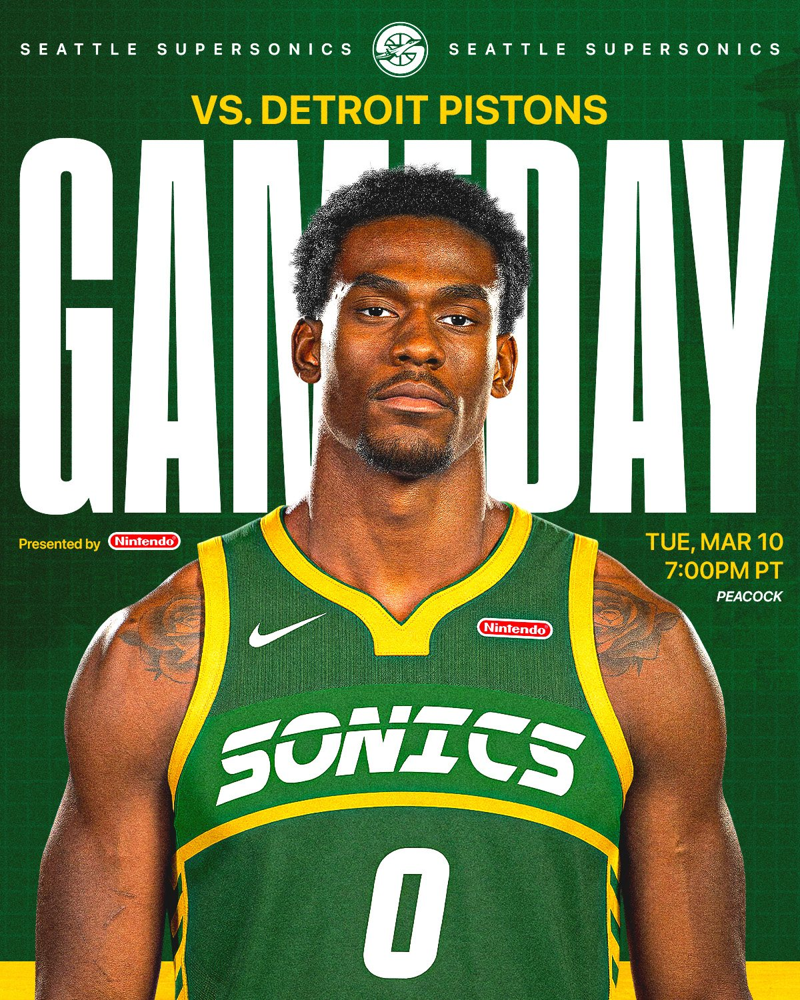

Independent concept · 2026
Seattle SuperSonics
Rebrand
An independent rebrand pairing SuperSonics heritage with Seattle’s visual identity.
01 / Identity system
Speed, history, Seattle.


02 / Uniform concepts
Four uniform concepts.


03 / Game-day graphics
Game-day graphics.



04 / Campaign and player graphics
Beyond game day.


05 / Visual system
Type and color.